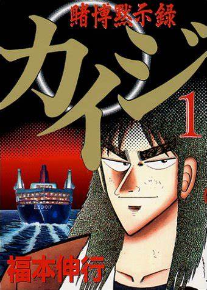

Teiai公司
Teiai公司，全称Teiai株式会社，是一家在全球范围内具有领先地位的综合型企业，以其创新的技术、卓越的管理和深远的社会影响力而闻名。自成立以来，Teiai公司始终秉承“创新、协作、共赢”的企业理念，不断拓展业务领域，致力于为客户提供优质的产品与服务，为社会创造价值。一、公司概况
成立时间：Teiai公司成立于20世纪末，经过多年的发展，已成为行业内的领军企业。
总部位置：公司总部位于日本东京，地处繁华的商业区，便于与国际市场接轨。
业务范围：Teiai公司的业务涵盖了高科技、金融、环保、教育、医疗等多个领域，形成了多元化的产业格局。
员工规模：公司拥有逾万名员工，其中专业技术人员占比超过60%，为公司的技术创新和业务发展提供了强大的人才支持。
二、业务领域
高科技产业：Teiai公司致力于研发和推广先进的技术产品，为全球客户提供高品质的解决方案。在人工智能、物联网、大数据、云计算等领域，公司取得了举世瞩目的成果。
金融业务：Teiai公司通过旗下的金融机构，为客户提供一站式金融服务，包括投资银行、资产管理、保险、信贷等业务，助力客户实现财富增值。
环保产业：公司关注环境保护，致力于研发新型环保技术，推动绿色产业发展。在废物处理、节能减排、水资源利用等方面，Teiai公司取得了显著成效。
教育事业：Teiai公司投身教育事业，投资建设了一批优质学校和教育机构，为全球培养了大量优秀人才。
医疗健康：公司致力于医疗技术研发和医疗服务体系建设，为提高人类健康水平作出贡献。
三、企业文化
创新精神：Teiai公司高度重视技术创新，鼓励员工勇于探索，不断突破行业边界。
协作理念：公司倡导团队协作，鼓励员工相互支持、共同成长，实现公司业务的全面发展。
共赢目标：Teiai公司追求与客户、合作伙伴、员工及社会共同发展，实现多方共赢。
四、企业社会责任
环保责任：Teiai公司积极履行环保责任，推动绿色生产，减少环境污染。
社会公益：公司关注社会公益事业，通过捐款、捐物、志愿服务等形式，助力社会和谐发展。
人才培养：Teiai公司重视人才培养，为员工提供丰富的培训机会，助力员工实现职业发展。
五、发展战略 
全球化布局：Teiai公司将继续拓展全球市场，加强与各国企业的合作，实现业务全球化。
产业升级：公司将持续优化产业结构，加大新兴产业投入，实现产业升级 。
创新驱动：Teiai公司坚持以创新为核心驱动力，不断提升企业竞争力。
总之，Teiai公司作为一家具有全球影响力的企业，始终坚持以人为本、科技创新、绿色发展，为实现人类更美好的生活不懈努力。在未来的发展中，Teiai公司将继续发挥自身优势，携手全球合作伙伴，共创辉煌。